A curated, deliberately opinionated map of self-evolving / self-improving LLM agents: systems that keep changing themselves after deployment — refining their prompts, memory, tools, and even weights from their own experience.
90+ papers across 13 topics · 15+ community projects · 2 runnable demos
code/safety_gated_evolution.py
| Paper | Year | Key Contribution |
|---|---|---|
| SICA | 2025 | Self-improving code agents (17-53% gains) |
| Self-Harness | 2026 | Harnesses that improve themselves |
| AlphaEvolve | 2025 | Evolutionary coding for scientific discovery |
| STOP | 2024 | Safe recursive self-improvement |
| CER | 2025 | Contextual experience replay |
| Voyager | 2024 | Lifelong skill-library growth |
| DSPy | 2023 | Compiling self-improving pipelines |
| MemGPT | 2023 | Tiered memory management |
The canonical cautionary tale: a refund agent that learns from customer satisfaction. Approving a refund makes the customer happy, so the agent slowly learns "approving is good" — and starts approving things it should refuse. Task success stays high the whole time.
Two root causes:
git clone https://github.com/sukoji/awesome-self-evolving-agents.git
cd awesome-self-evolving-agents# Run the safety-gated evolution demo
python code/safety_gated_evolution.py
# Read the primer
cat docs/primer.mdEssential reference — Comprehensive map of the self-evolving agent field.
cloned-repos/awesome-self-evolving-agents/ | Papers in cloned-repos/papers/
python code/safety_gated_evolution.pydocs/primer.md